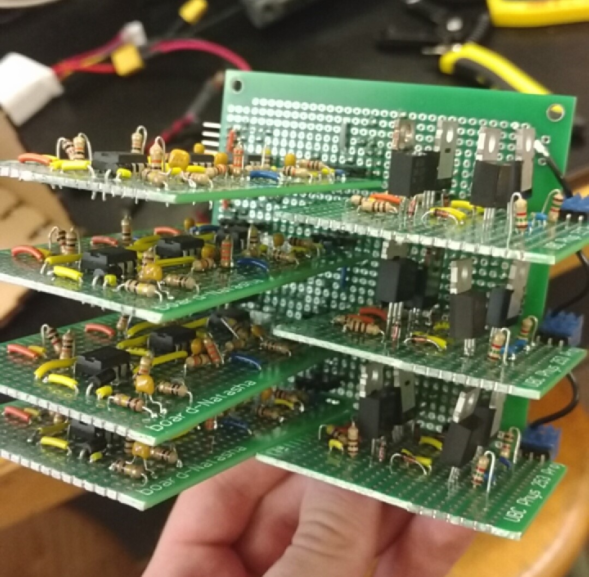

Electrical

The electrical systems of the ray were designed to be modular and replaceable, and we wanted to make sure that all inputs, outputs, and power connections were easy to keep track of. These goals line up with our principles of simplicity, robustness, and adaptability.
To accomplish these goals, we created a circuit rack that allowed usto easily remove all of our circuits. The rack was actually made of another circuit board, with female headers as the plug-in points. This rack board contained all the power rails, inputs, and outputs on it, and allowed us to route all of our inputs directly to the TINIAH board.

On the right is an image of our circuits inserted in the rack, which is mounted in the back compartment of the ray. Two main kinds of circuits were used. H-bridges, to control the drivetrain (right side) and IR processing circuits (left side) for accurately detecting passengers.
The IR processing circuits
detected the IR light, performed DC blocking, filtered to the right frequency (using a biquad filter), amplified the signal, and rectified it to
a near DC signal that could be taken as an analog input to the TINAH board.
The H-bridges drew PWM signals from the motor outputs of the TINAH and used four MOSFET's for rapid switching. The particular model of H-bridge that we used was designed by Scott Lawson, and can be seen below.